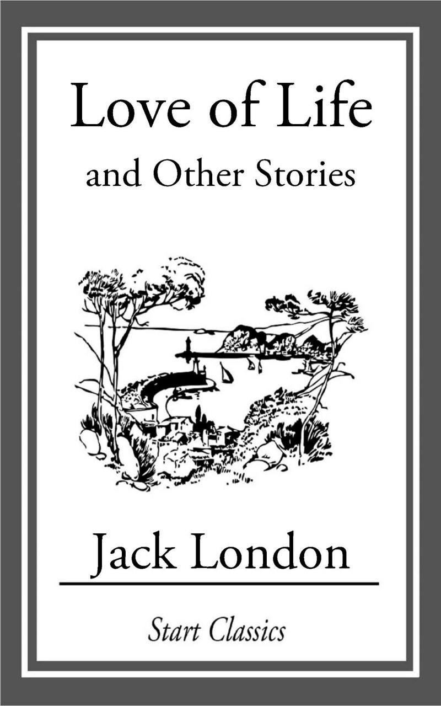

Download book
Download book
"1984" by George Orwell: "1984" is a dystopian novel set in a totalitarian future where the omnipresent Party, led by the figurehead Big Brother, exercises absolute power over every aspect of life. The protagonist, Winston Smith, works at the Ministry of Truth, where he alters historical records to fit the Party’s propaganda. As Winston begins to question the regime and seeks truth and rebellion, he becomes entangled in a dangerous game of surveillance, manipulation, and betrayal. Orwell’s novel is a powerful critique of oppressive governments and a chilling warning about the loss of individual freedoms and the impact of authoritarianism on human dignity.

Download book
"Love of Life" by Jack London: "Love of Life" is a gripping short story that captures the raw struggle for survival in the harsh environment of the Arctic wilderness. The narrative follows two nameless men who are journeying through the freezing, desolate terrain. As they face extreme cold, starvation, and exhaustion, their bond and humanity are tested to the limit. The story poignantly explores themes of perseverance, the instinct for survival, and the deep-seated will to live despite overwhelming odds. London's vivid and brutal depiction of nature's indifference and the characters' relentless determination underscores the story's powerful emotional impact.